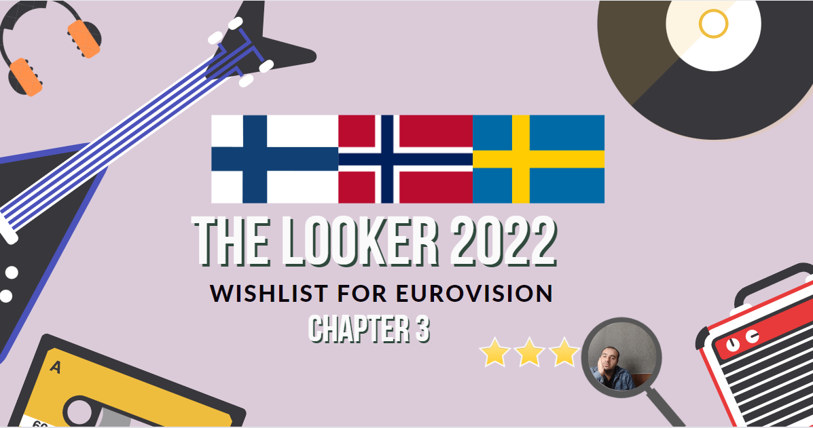
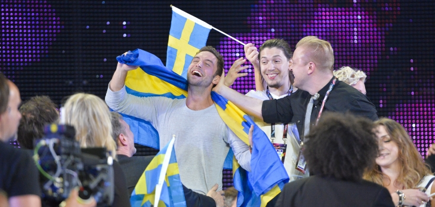
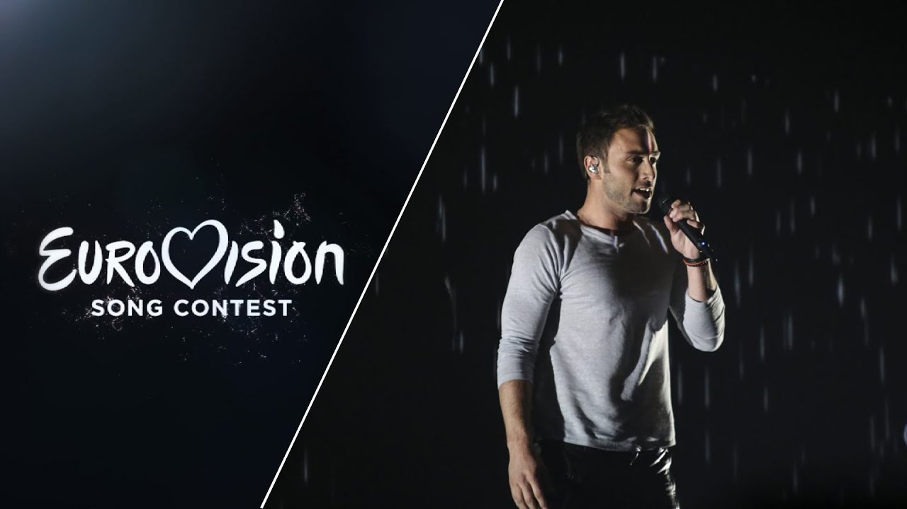
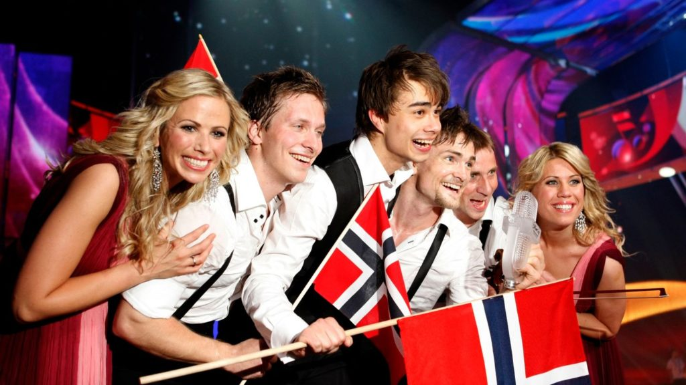
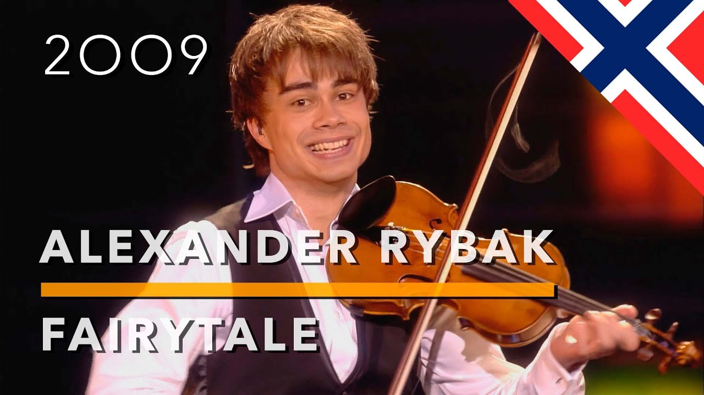
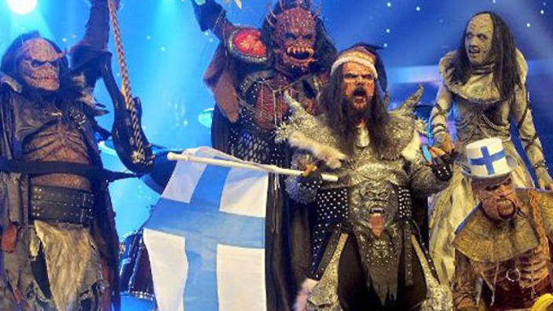
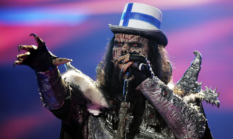

In this article, we have prepared the Eurovision songs of the Scandinavian countries for you.
Sweden, participated in and won the Eurovision Song Contest 2015 with the song "Heroes" written by Linnea Deb, Joy Deb and Anton Malmberg Hård af Segerstad. The song was performed by Måns Zelmerlöw. The Swedish broadcaster Sveriges Television (SVT) organised the national final Melodifestivalen 2015 in order to select the Swedish entry for the 2015 contest in Vienna, Austria. After a six-week-long competition consisting of four heats, a Second Chance round and a final, "Heroes" performed by Måns Zelmerlöw emerged as the winner after achieving the highest score following the combination of votes from eleven international jury groups and a public vote.
Heroes is a song by Swedish singer Måns Zelmerlöw. It was released on 28 February 2015 as a digital download in Sweden. The song was written and composed by Anton Malmberg Hård af Segerstad, Joy Deb and Linnea Deb. On 14 March, the song won Melodifestivalen 2015 and represented Sweden in the Eurovision Song Contest 2015 in Vienna, Austria, which it won. It is the lead single for Zelmerlöw's sixth studio album Perfectly Damaged. Sweden won Eurovision with this song in 2015.
Norway participated in the Eurovision Song Contest 2009 with the song "Fairytale" written and performed by Alexander Rybak. NRK organised the national final Melodi Grand Prix 2009 in order to select the Norwegian entry for the 2009 contest in Moscow, Russia. "Fairytale" performed by Alexander Rybak was selected as the winner with the clearest victory in Melodi Grand Prix to date following a five-week-long competition consisting of three semi-finals, a Last Chance round and the final.
Fairytale is a song written and composed by Belarusian-Norwegian violinist and singer Alexander Rybak, the first single from his debut album Fairytales. The song was the winner for Norway of the Eurovision Song Contest 2009, held in Moscow, Russia. In 2022, The Independent named it 35th best Eurovision-winning song of all time.
Finland was represented by Lordi in the Eurovision Song Contest 2006 with the song "Hard Rock Hallelujah". The song, written and composed by band member Mr. Lordi, went on to win the Eurovision Song Contest in 2006, placing first in both the semifinal and final. This gave Finland its first ever win in the competition.
Hard Rock Hallelujah is a song by Finnish hard rock band Lordi. It was released as a single in 2006, reaching the No. 1 spot in Finland and reaching the top 10 in eight other European countries. In the United Kingdom, the song peaked at No. 25. Lordi performed the song for Finland at the 2006 Eurovision Song Contest and won the contest with 292 points, marking the country's first win. It was voted as the most popular Finnish Eurovision entry in the 40 years the country had participated. It held the record for most points until it was beaten by "Fairytale" by Alexander Rybak of Norway with 387 points three years later. On 26 May 2006, Lordi broke a world record for karaoke songs, when about 80,000 people sang "Hard Rock Hallelujah" on Helsinki's Market Square.
